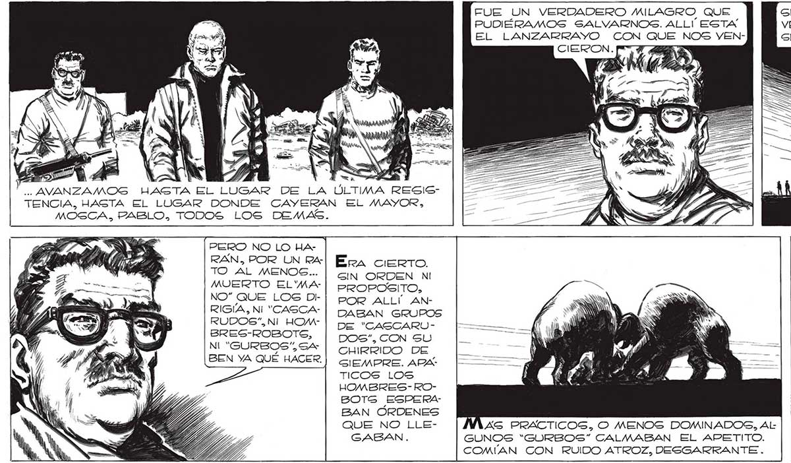
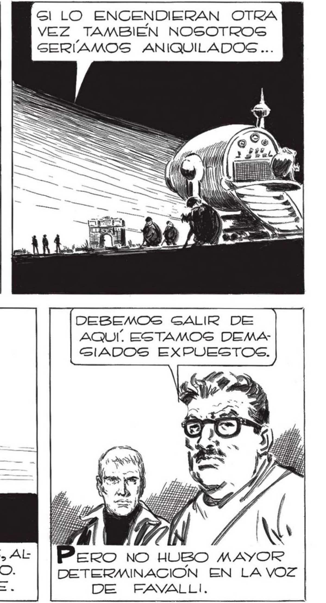

Ya O ME UJABA GESAGDO EL “MANO”. COMO SONAMBULOS, COMO ATRAIDOS HIPNÓTICA _G= MENTE POR LOS CALCINADOS RESTOS... .. AL ES A» E = Y a DULCE Y MELANCOLICO CANTO DEL FUE UN VERDADERO MILAGRO QUE PUDIÉRAMOS SALVARNOS. ALLI ESTA EL LANZARRAYO CON QUE NOS VENGl LO ENCENDIERAN OTRA VEZ TAMBIEN NOSOTROS GERIAMOS ANIQUILADOS ... só Y TENCIA, HASTA EL LUGAR DONDE CAYERAN EL MAYOR, MOSCA. PABLO, TODOS LOS DEMAS. PERO NO LO Ha- | RAN, POR UN RaTO AL MENOS... MUERTO EL'MANO” QUE LOS DIRIGÍA, Ni “CASCARUDOS”,NI HOMBSRES-ROBOTS, N| "GURBOS%S4 BEN YA QUÉ HACER. Era cueRrTO. GIN ORDEN NI PROPOSITO, POR ALLÍ ANDABAN GRUPOS DE “CASCARUDOS”, CON SU CHIRRIDO DE GIEMPRE. ARPATICOS LOS HOMBRES-ROBOTS ESPERABAN ORDENES QUE NO LLEGABAN. DEBEMOS GALIR DE AQUÍ, ESTAMOS DEMAGIADOS EXPUESTOS. AS PRACTICOS, O MENOS DOMINADOS, AL GUNOS “*“GORBOS” CALMABAN EL APETITO. COMÚAN CON RUIDO ATROZ, DESGARRANTE . DETERMINACION EN LA VOZ DE FAwALLI, 245

